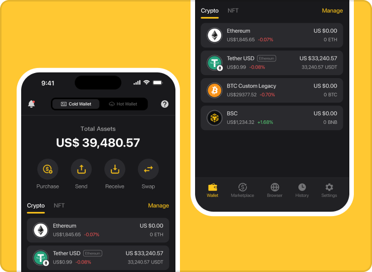
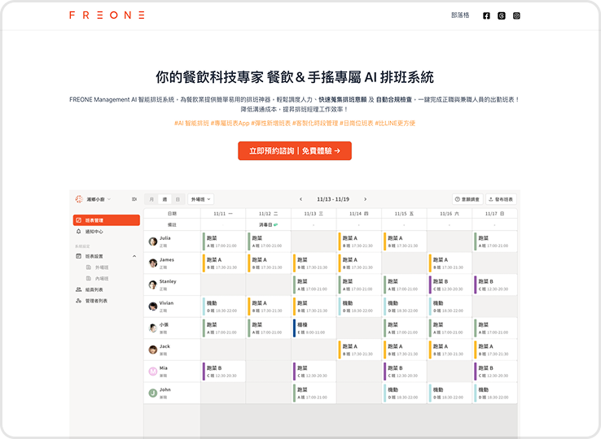
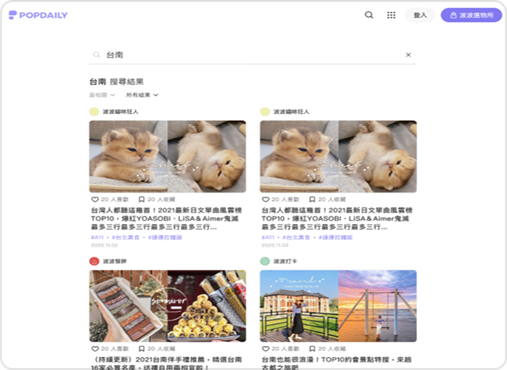

Product Manager & Designer · 8+ Years
Hi, I am
Sophie.
嗨！我是產品經理 Sophie。擁有超過 8 年的軟體產品規劃與設計經驗，對於打造優質且令人愉悅的使用體驗充滿熱情。兼具以用戶為本的同理心，和數據驅動的理性思維，並多次為產品訂定目標與計劃取得商業成功。
Team Lead
UI/UX Designer
Product Manager & Designer · 8+ Years
Hi, I am
嗨！我是產品經理 Sophie。擁有超過 8 年的軟體產品規劃與設計經驗，對於打造優質且令人愉悅的使用體驗充滿熱情。兼具以用戶為本的同理心，和數據驅動的理性思維，並多次為產品訂定目標與計劃取得商業成功。

CoolWallet 是一個虛擬資產管理的產品，可視為去中心化的網路銀行，提供消費端用戶存放與交易虛擬貨幣的服務。為提升 App 內收益，我定義了關鍵指標「服務使用率」：交易用戶人數與佔比，並透過數據驅動迭代產品，在我任職的 30 個月一共提升了約 6%。

為餐飲業提供簡單易用的排班系統，幫助餐廳提升營運效率。新創初期的極簡編制下（共三人），由我負責前期的用戶調查探索問題至規劃解決方案和流程設計等，另外兩位成員分別是工程師與業務。

PopDaily 是以 20-40 歲女性為受眾的內容平台，我負責提升網頁版搜尋轉換率，以數據驅動的方式迭代優化產品。其中解決方案包了排解正向流程的阻礙、與數據科學家協作調整演算法、調整 UI 畫面等等。